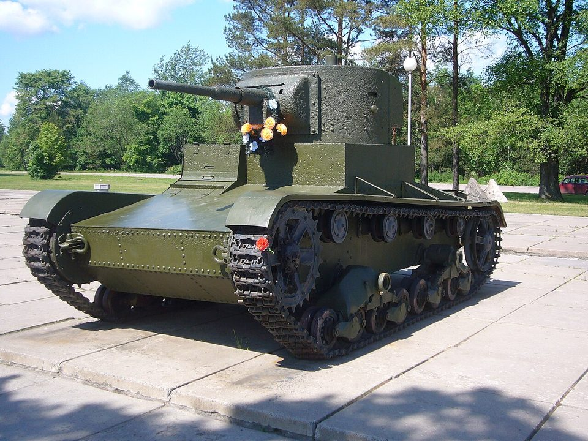

Comparativas, listas y más
Comparativas entre carros rivales, récords, un glosario de términos y la cronología completa.
Historia
 Historia
HistoriaBreve historia del carro de combate, de 1916 a 1991
Cómo nació el carro de combate en las trincheras de la Primera Guerra Mundial y cómo evolucionó hasta los carros de combate principales del final de la Guerra Fría.

HistoriaLos tanques de la Guerra Civil española (1936–1939)
Qué carros de combate se usaron en la Guerra Civil española, de dónde vinieron, cómo se comportaron y por qué el T-26 soviético fue el más eficaz.
 Historia
HistoriaLa evolución del blindaje: de la chapa remachada al blindaje compuesto
Cómo cambió la protección de los carros de combate entre 1916 y 1991: grosor, inclinación, fundición y soldadura, blindaje compuesto, reactivo y protección activa.
Comparativas
 Comparativa
ComparativaT-34 contra Panzer IV: los dos carros medios del frente oriental
Comparativa entre el T-34 soviético y el Panzer IV alemán: blindaje, armamento, movilidad, producción y cómo se enfrentaron entre 1941 y 1945.
 Comparativa
ComparativaTiger I contra IS-2: el duelo de los carros pesados
Comparativa entre el Tiger I alemán y el IS-2 soviético: el cañón de 88 mm frente al de 122 mm, blindaje, peso y papel en la guerra.
- Comparativa
Panther contra Sherman: calidad frente a cantidad
Comparativa entre el Panther alemán y el M4 Sherman estadounidense: cañón, blindaje, fiabilidad y producción.
 Comparativa
ComparativaSherman contra T-34: los dos carros más fabricados de los aliados
Comparativa entre el M4 Sherman y el T-34, los carros que ganaron la guerra por número: diseño, comodidad, armamento y producción.
 Comparativa
ComparativaM1 Abrams contra T-72: el final de la Guerra Fría
Comparativa entre el M1 Abrams estadounidense y el T-72 soviético: tripulación, blindaje, motor, munición y su enfrentamiento en la guerra del Golfo.
 Comparativa
ComparativaLeopard 2 contra M1 Abrams: dos hermanos separados
Comparativa entre el Leopard 2 alemán y el M1 Abrams estadounidense, nacidos ambos del cancelado MBT-70: motor, cañón, blindaje y exportación.
 Comparativa
ComparativaCenturion contra T-54/T-55: los grandes carros de la posguerra
Comparativa entre el Centurion británico y el T-54/T-55 soviético: diseño, cañón, protección y su enfrentamiento en Oriente Próximo.
 Comparativa
ComparativaMark IV contra A7V: el primer combate entre tanques
Comparativa entre el Mark IV británico y el A7V alemán, protagonistas del primer combate entre carros de la historia en Villers-Bretonneux, en 1918.
Listas y récords
 Lista
ListaLos 10 tanques más fabricados de la historia
Los carros de combate fabricados en mayor número, del T-54/T-55 al M48 Patton, con las cifras de producción de cada uno.
 Lista
ListaLos 10 tanques más pesados
Los carros de combate más pesados de la enciclopedia, del Maus de 188 toneladas al IS-7, con su peso y su historia.
 Lista
ListaLos 10 tanques más rápidos
Los carros de combate más rápidos de la enciclopedia, del M18 Hellcat a los carros principales de los años ochenta, con su velocidad máxima en carretera.
- Lista
Primeras veces: los tanques que inventaron algo
Los carros de combate que introdujeron por primera vez una idea: la torreta giratoria, el transporte blindado, el cañón de ánima lisa, la construcción soldada y más.
 Lista
ListaLos tanques y España
Los carros de combate que usó, fabricó o diseñó España, desde los Schneider de la guerra del Rif hasta el Leopardo 2E fabricado en Sevilla.
Para consultar
- Glosario
Qué significan glacis, mantelete, Ausf., APFSDS y otros términos.
- Cronología
Todos los tanques ordenados por año.